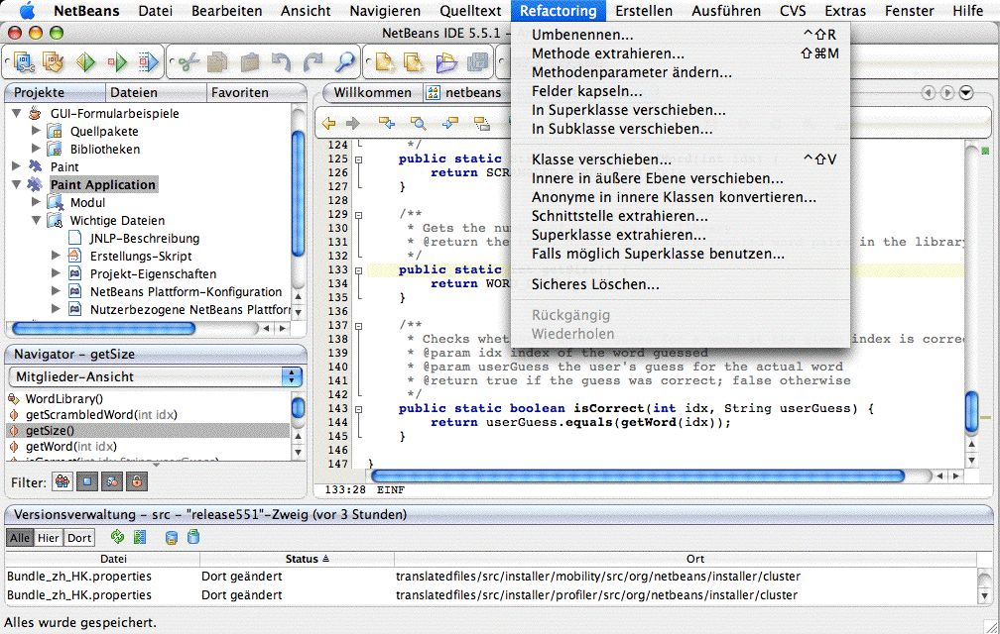
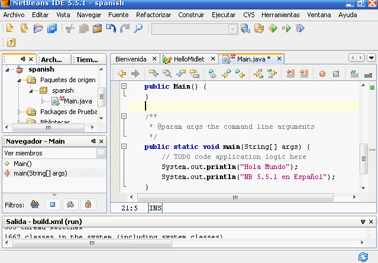

The NetBeans community is proud to announce NetBeans IDE 5.5.1 in Spanish and German. These two localizations are now available in addition to the previously released localizations for Japanese, Portuguese, traditional and simplified Chinese.
David and Aristides
The German and Spanish localization teams are comprised of members of the NetBeans community. They met on developer forums or mailing lists and agreed that a localized version of the IDE would be a benefit for people speaking their language. So they joined the TranslatedFiles project, and took the translation into their own hands.
Ruth Kusterer is the coordinator of the German translation team whose 6 members come from Switzerland and Germany. David Álvarez León and Aristides Villarreal are the coordinators of the Spanish translation team. The Spanish team has 40 members who come from Panama, Spain, Mexico, Guatemala, Chile, Argentina, Peru, Cuba, and Colombia.
The teams would like to thank Janice Campbell and Masaki Katakai from the TranslatedFiles team for their help with streamlining the translation process, and their support and enthusiasm for the localization project.
We regret that Mario Alberto Jiménez of Guatemala, a member of the Spanish translation team, died in a car accident this month. The NetBeans community sends condolences to his family.
NetBeans IDE 5.5.1 is available in Japanese, Portuguese, German, Spanish, traditional and simplified Chinese. Additionally, the Profiler and the CLDC Mobility Pack have been localized into Chinese and Japanese.
Tip: If you wish to use an add-on that has not been localized yet into your language, we recommend you to install the Standard English version of the pack or plug-in.

This is what NetBeans IDE 5.5.1 looks like in German.
When working in a team it's important to keep your translations consistent. In the case of Spanish, the language is spoken on the American and the European continent, and the team needed to agree on certain terms and phrases; not only to avoid regionalism, but also to bring repeating strings of the user interface in line.
To keep inconsistencies at a minimum, the NetBeans community uses OmegaT, a free translation memory tool. This piece of software exposes an application's localizable strings, and displays previous translations everytime you come across a matching similar string. If you are interested in localization, it is worth learning more about how to translate applications using OmegaT.
Depending on the size and spare-time of the team, it takes a few months to complete the translation of an application of the size of NetBeans IDE. Additional time should be considered for quality and consistency testing.

This is what NetBeans IDE 5.5.1 looks like in Spanish.
translatedfiles CVS module.
If you don't have permission, send the files to your team lead who commits them for you. Tip: Don't forget to check older versions before you start your project: NetBeans IDE 5.0 for instance does not only contain localized files for Japanese, Chinese, and Spanish, but also for Korean, Russian and French. You can save time and work by migrating existing files from 5.0 to 5.5. Part of the process is to create a translation memory that will simplify your team's work.
Did you know NetBeans.org also offers you release notes, install instructions, and a great number of tutorials in Japanese, Chinese, and Brasilian Portuguese?
Several other tutorials, for example the NetBeans Quickstart, are available in even more languages, such as German, Greek, Georgian, Spanish, or Albanian. Remember to check the language pop-up menu at the top of each page, or browse the site map for a complete list.
Thanks to Aristides Villarreal for introducing me to the work of the Spanish team.